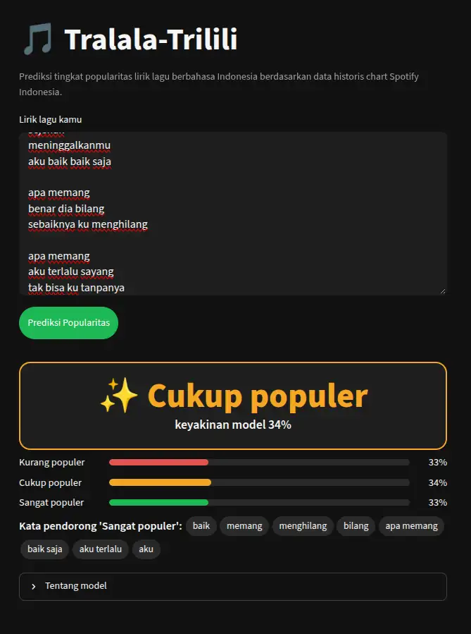

🎵 Tralala-Trilili
Prediksi tingkat popularitas lirik lagu berbahasa Indonesia — Kurang, Cukup, atau Sangat populer — berdasarkan data historis chart harian Spotify Indonesia.

Hasil benchmark
1.260
lagu berbahasa Indonesia unik dari chart Spotify Indonesia, lirik dari LRCLIB
0,45
macro-F1 model produksi (3 kelas), dua kali baseline kelas mayoritas (0,22)
0,63
macro-F1 terbaik (fine-tuning IndoBERT, biner, artis baru)
Tujuh metode dibandingkan dengan protokol bebas kebocoran data, dari SVM + SMOTE hingga fine-tuning IndoBERT. Lirik membawa sinyal popularitas yang nyata tetapi moderat. Baca laporan benchmark.
Cara kerja
- Data: scraping harian chart Kworb dan lirik LRCLIB; hanya lirik berbahasa Indonesia.
- Label: popularity = total streams ÷ jumlah hari di chart, dibagi tiga kelas berdasarkan kuartil.
- Model: TF-IDF + Logistic Regression berbobot kelas, dilatih ulang otomatis setiap hari lewat GitHub Actions.
- Rilis: model baru dirilis ke Hugging Face hanya bila lolos validation gate; aplikasi memakainya tanpa redeploy.
Sitasi
Proyek ini terinspirasi oleh: Lubis, Q. L. A., & Huda, A. A. (2025). Implementation of SVM Algorithm to Predict Song Popularity based on Sentiment Analysis of Lyrics. Journal of Applied Informatics and Computing (JAIC), 9(2), 265–272.